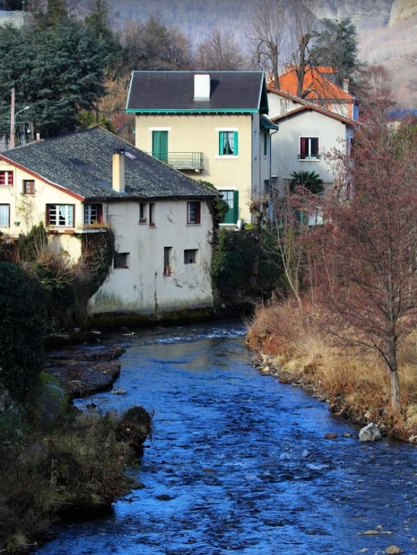
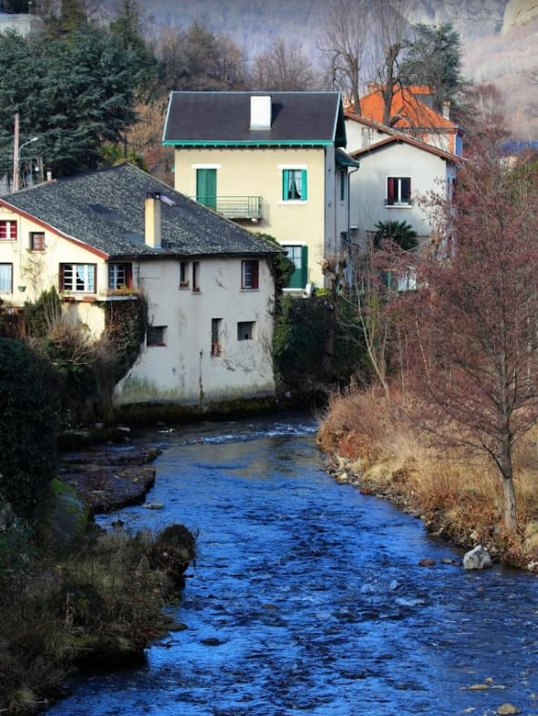

Luxury Holidays &
Art of Living in France
Content
The Beauty
You might never have discovered the best of France.
Behind the chaotic and "wanting to be number 1" mentality,
omni-present in its society, lays a hidden beauty.
Not only in nature but also in people.
Apart from the large and beautiful variety of the natural environment,
France has produced a noticeable quality of life.
Some call it the
Art of Living.
Marked by a certain absence of anxiety, even in the midst of hectic chaos, French character is forged by a natural encounter of opposing forces.
Basic brute forces, adapted in their coexistence, and in spite of appearances,
have found a balance. People likewise, have learned to live and are mostly happy and
peaceful. Life appears to be self-sufficient. Whether poor or rich, active or passive, left or right
(political choice), in general, people are balanced, even if appearance doesn't show.
I am not talking about a large and growing immigrated, "non-French' part of society, but about the native French people : those who have inherited genetically the character this land has produced.
In history, many have desired to conquer France, collectively and individually. Still today, people from all over the world flow into the country, trying to make it their homeland, longing to be integrated.
For this, cultural understanding is crucial.
Being social and hospitable, France wants to help a lot of people. Most immigrants though, will hardly ever truly come to understand the life and culture of the local people.
The Difference
Common life in France paints another picture than the overall competitive Anglo-American,
North European or Asian societies, where generally a severe survival battle claims its price.
Things like performance pressure, goals to attain, obligations and responsbilities to assure, make most people's lives a never-ending,
stressful race to beat the competition. This way of living claims high tolls, usually called
stress and anxiety.
The bottom line is this: "We don't have it, and we stress to get it.”
Whatever "it' means to live peacefully.
The excellence of France I suggest doesn't need that kind of pressure.
Aiming to become the number one doesn't work here. Winning is not that important.
Beating the competition doesn't last. Authenticity and acceptance do.
The Daily life
In France one can find the balance needed to be fulfilled. Generally, life is prosperous.
Mainstream society has disciplined habits, a daily rhythm, a good measure of satisfaction
and happiness. There is reasonable social and financial freedom, with help and opportunities.
People are mostly qualified and faithful in their work and fast runners will get
frustrated quickly.
Top performance doesn't come from being fast and beating the competition. It is cultivated
by diligently and patiently laboring on quality work. With peace of mind.
France is rather expressive and artistic. Peace, the absence of anxiety,
is a crucial ingredient for the success of any artist. If he knows how to patiently let
nature perfect his work.
Globally, French people are quite characteristic and out of the box. Expressive.
They may seem to come from another planet sometimes. You may wonder what point of view
they are coming from. Logic is not their strong point. Intuïtion is. This can be very
frustrating for foreigners. It is not always easy to understand how they tick.
But enriching and fascinating to discover, IF we're open for some surprises.
When I started to let go of my “Dutch Germanic” educational concepts, after many years,
I became more “French”. I discovered a new and fascinating way of living my life.
With peace. It made me happy and better balanced. But I have no clue if French people
know what I am talking about.
.jpg)
.jpg)

The Art of Living
To breathe with freedom and live in the absence of performance pressure
is indeed stress-relieving. At best, this is what France has to offer.
If we succeed to get out of the common rat-race.
For that, one needs a minimum of discipline. French art of living is based on hard
but peaceful work and living a simple life, appreciating small things:
a "baguette', smelly cheese, a bottle of fine wine, enjoying a picknick with a belvedere.
Or having an encounter in a cozy street, a talk with a stranger, a few reflections
and considerations, rapted up in a bath of sunshine.
And of course, regularly a good laugh on the terrace of the village bar.
That will be enough to live satisfied, for the present moment. Demanding more
would fail the point of life and disturb the harmony in this beautiful country.
Small things matter and make a difference. Small things do not really exist in our
big universe. Or at least, they are relative. Compared to our Universe, everything
is small. We are small!
Art and quality come from valuing and cultivating things.
Starting small. This seems to be a French native understanding, even if
they appear differently. In the daily authentic French character we find a humble
attitude of discipline. Resisting that, will cause suffering in France.
Trying to be great will not be accepted. Starting small will be accepted.
I guess this is also universal.
Great if you get the point. The king in France does…
The Life of a King
There is an expression to 'Live like a King or a God in France'. It has a long dated meaning. It is not about wealth or power, which mainly generate anxiety. The root is in culture: although France is rich with beautiful natural environments and resources, the human riches are in the cultural heritage and in the art of living. Don't get me wrong: a lot of people in France do not live like kings … rather as hard workers.
What is Culture?
Let's say that culture is the expression of the thoughts and labors of man. So France is rich in culture. Lots of creative thinking. Lots of expressions. Many generations have reflected and labored to express who they are and want to be. Artistic creativity and a peaceful mindset have been ingredients to this. And culture culminates. Thoughts and labor of man influence thoughts and labor of man.
So culture produces a heritage. The passing on of thoughts and labor.
In France for many centuries.
The art of living is not in "what" we do but in "how"
we do it. Every country makes wine. But not like the French. Every country makes cheese.
But not like the French. Love it or hate it, at least they have their way
and experts praise them for it.
It takes time to learn a skill. For a nation, it is called "Culture". It takes
passing on of knowledge and experience, it takes examples, generation upon generation,
and it takes observation.
The Quality
 

Of course, the quality of life depends on who and where you live and the means you have. Generally, life in France provides what you need. People have a global feeling of happiness, peace of mind and satisfaction. Now that is quite a statement, and maybe not everyone agrees. In the restless Monday morning traffic of Paris, it will be hard to imagine this. But there also, in the midst of horning cars and yelling drivers, a certain peace of mind covers the population. Unless chaos is all one can notice.
Although France is quite rich, this global satisfaction is not related to financial wealth. Rich people are all over the world but do not necessarily have quality of life. Many rather poor, hard-working French people do have quality of life. Many live peacefully, happily and fulfilled. Their ability to appreciate simple, natural things is related to this quality of life, and is passed on in their culture.
Although dispute and complaint seem omnipresent outwardly, in reality, it is only a game. Just another way of doing things. In most cases it does not reflect the inner state of the people. And of course, this does not concern everybody. It is impossible to tell what percentage of the people in France truly own the cultural heritage, and how many are merely trying to copy a way of life that is not really their own. The original blueprint might become rarer and rarer. Less and fewer people may even be aware of its existence. Pride, arrogance and selfishness make all people blind, also among the French.
Loosing Flavor
I am aware that unfortunately, globalization and mixed cultures cause old forged quality and traditions to disappear. Slowly, we're all blending into one and the same multinational society, a dark brown mixture, where all cultures and paths of life blend into one stew. How long before there will be only one land, one language and one culture, Earth?
We can find Chinese and Indian restaurants all over Europe (I love their food!) and McDonalds all over Asia. Somebody concerned?
Less and less people seem to want to preserve their native traditions from their homeland anylonger. The overall aim is for progress, luxurious lifestyles, stature and comfort.
As a French publisher and citizen, I want to promote French quality of life, tradition and culture. I don't mean political, military or economical France, neither the haughty, puffed up France. They also exist.
I'm talking about authentic and honest France: the modest, social, creative and helpful civilisation, with lots of precious treasures to share. A people that takes things to heart and cares for others, one that appreciates life, cultures and history. May such France live!